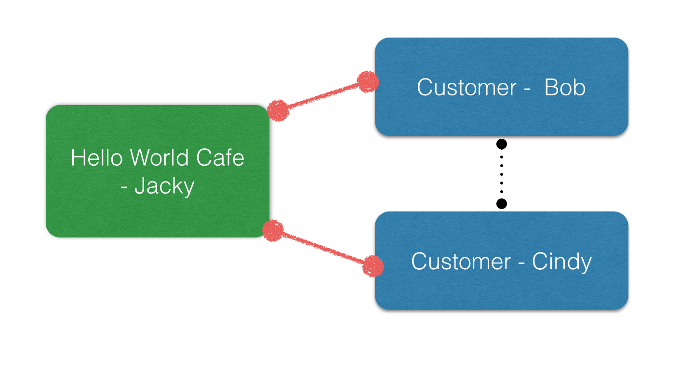
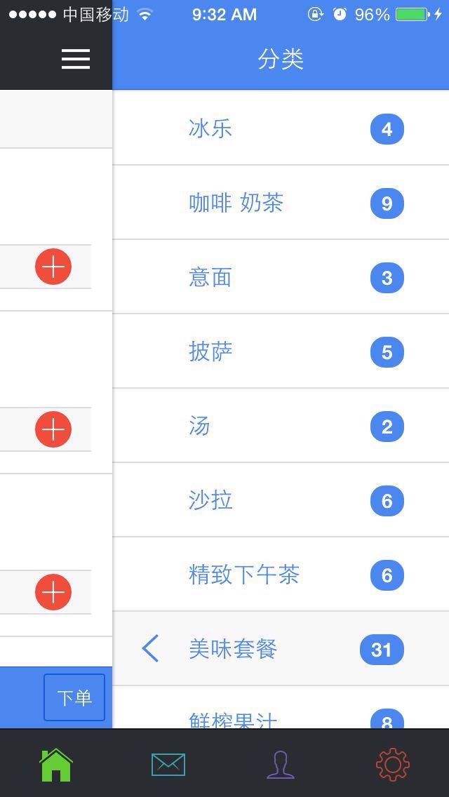

Delivery Services in Mobile Bay
Implementation
Created by Hain Wang / hain@arrking.com Beijing Arrking Tech co., Ltd.
Themes
Agenda
- Key User Stories Review
- Social Network
- Service Channel
- Cloud Based, Big Data Ready
- Get moBay in App Store
User Story Review
- case 1: Get to know people in Cafe, Bar, etc.
- case 2: Food Ordering
User Story Review
User Story Review

Social Network - 移动港湾 v0.0.2
Service Channel - 移动港湾 v0.0.3
